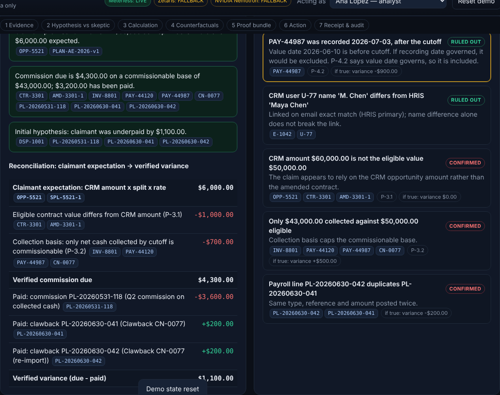
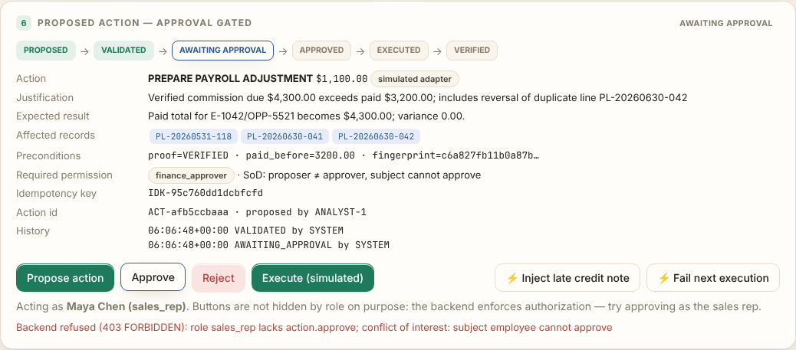
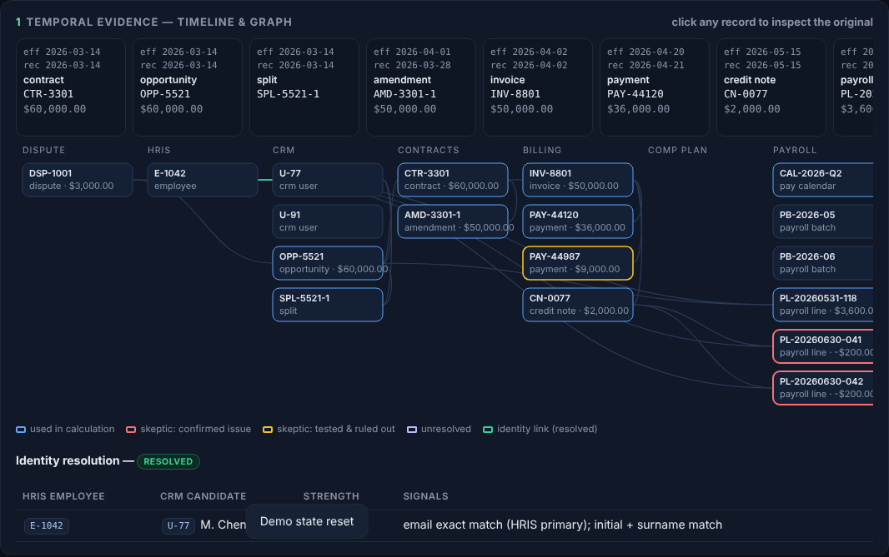
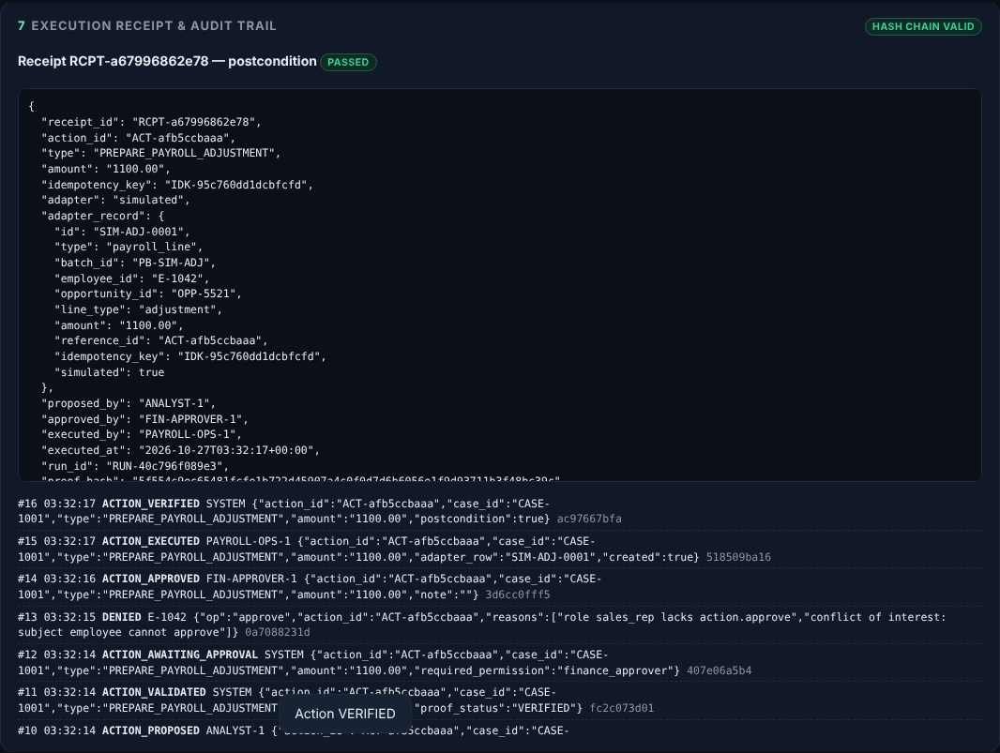

Proof-carrying commission dispute resolution. It works out what should have been paid, shows the evidence, tests the alternatives, and only then acts, with approval.
Synthetic data · simulated payroll adapter · Python stdlib + vanilla JS
Analysts reconcile this by hand. Chatbots guess. Neither leaves a proof, and neither is safe to let near payroll.
Target users: sales-compensation and payroll operations analysts, finance approvers, and the reps who file disputes.
Every line cites source records and a policy clause. All of it is computed by deterministic Decimal code.
Same engine, hypothetical overlays, always labelled hypothetical and never treated as financial events.
changed=true at approval or execution, the action EXPIRES.Zetaris: one fixed, validated SELECT per source system over the documented REST SQL route, with per-system provenance on every investigation.
What's unique: the bitemporal edges carry the core payroll distinction, value date versus recorded date. The engine's idempotency contract becomes a payroll safety control.
| Meterless World Model | LIVE in-process on every investigation. A one-to-one port of the official 8-check conformance suite passes 8/8. |
| Zetaris | Implemented to the documented REST route; not yet run against a live instance. Stub-contract-tested; live smoke test included. |
| NVIDIA Nemotron | Client for integrate.api.nvidia.com implemented; not yet called with a real key. Output is cite- and amount-checked. |
| Cursor | Open item: this build was produced in Claude Code. The team's Cursor use must be described truthfully. |
The UI shows LIVE / CONFIGURED_UNVERIFIED / FALLBACK / UNAVAILABLE from runtime outcomes. A mock never reads LIVE.
decimal money, an event-sourced Meterless World Model, and a stdlib HTTP APIlogs/, 3 samples, tests, a -case benchmark, and dispute intake so any new case runs the full pipelinepython3 run.py or Docker; run.py --check-integrations



No dependencies and no credentials. It opens on CASE-1001 at http://127.0.0.1:8360.
github.com/victrvondoom/Open-Agent
python3 -m unittest discover -s tests · python3 -m payproof.bench